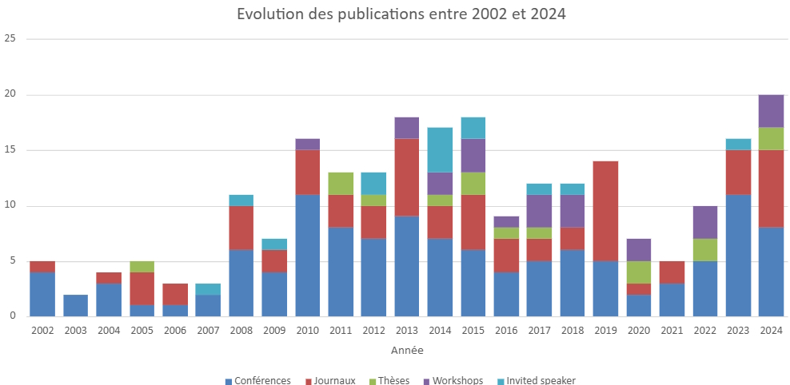

Liste complète des publications¶
Cette section liste l'ensemble de mes publications dans les journaux, chapitres de livre, conférences et ateliers nationaux et internationaux.

Graphique des publications¶

au 21/02/2018
Journaux internationaux (32)¶
| id | Année | Quartile1 | Référence |
|---|---|---|---|
| 145 | 2018 | Q2 2016 | Muhammad Arslan, Christophe Cruz, Ana-Maria Roxin, Dominique Ginhac, Spatio-temporal Analysis of Trajectories for Safer Construction Sites, Journal of Smart and Sustainable Built Environment (SASBE), Emerald, 2018, (IF 0.63, 2016) |
| 144 | 2018 | Q2 2016 | Mokhtaria Hacherouf, Safia Nait-Bahloul, Christophe Cruz, Transforming XML Schemas into OWL ontologies using Formal Concept Analysis, SoSym Softwware and Systems Modeling, https://doi.org/10.1007/s10270-017-0651-4, pp 1-18, 2018, (IF 1.654, 2016) |
| 143 | 2017 | Q4 2016 | C. Prudhomme, T. Homburg, F. Boochs, A. Roxin, C. Cruz, Integration, quality assurance and usage of geospatial data with semantic tools, gis.Science, p.91-96, ISSN 1869-9391, 2017. |
| 141 | 2017 | Q3 2016 | C. Prudhomme, A.Roxin, C. Cruz, C., F. Boochs, Towards the Design of Respond Action in Disaster Management Using Knowledge Modeling, In International Conference on Information Systems for Crisis Response and Management in Mediterranean Countries (pp. 168-174), Springer's Lecture Notes in Business Information Processing, 4th International Conference, ISCRAM-med 2017, Xanthi, Greece, October 18-20, 2017, Proceedings, 2017. |
| 128 | 2016 | Peixoto, Rafael; Hassan, Thomas; Cruz, Christophe; Bertaux, Aurélie; Silva, Nuno; Hierarchical Multi-Label Classification Using Web Reasoning for Large Datasets, Open Journal of Semantic Web (OJSW),3 (1), 1-15, 2016, RonPub lien | |
| 127 | 2016 | Q2 2016 | Homburg, Timo; Prudhomme, Claire; Würriehausen, Falk; Karmacharya, Ashish; Boochs, Frank; Roxin, Ana; Cruz, Christophe; Interpreting Heterogeneous Geospatial Data Using Semantic Web Technologies, International Conference on Computational Science and Its Applications, 240-255, 2016, Lecture in Computer Science, Springer International Publishing, ISBN 978-3-319-42110-0 |
| 121 | 2015 | Q1 2016 | Harbelot, Benjamin and Arenas, Helbert and Cruz, Christophe, LC3: A spatio-temporal and semantic model for knowledge discovery from geospatial datasets, Web Semantics: Science, Services and Agents on the World Wide Web, vol. 35, pp 3-24, 2015, Elsevier (Indexed ISI WOS, IF 2,55) |
| 119 | 2015 | H. Arenas, B. Harbelot, C. Cruz, Reasoning with Vague Spatial Information from Upper Mesopotamia (2000BC), Spatial Statistics: Emerging Patterns, 9-12 June 2015, Avignon, France, Elsevier Procedia Environmental Sciences. lien | |
| 109 | 2015 | Q3 2016 | David Werner, Thomas Hassan, Christophe Cruz, Aurélie Bertaux and Nuno Silva, Semantic-based recommender system with human feeling relevance measure, Studies in Computational Intelligence, Springer, 2014 |
| 108 | 2014 | Q2 2014 | Helbert Arenas, Benjamin Harbelot, and Christophe Cruz, A Semantic Web Approach for Geodata Discovery, Jeffrey Parsons Dickson Chiu (Eds.), Advances in Conceptual Modeling, ER 2013 Workshops, LSAWM, MoBiD, RIGiM, SeCoGIS, WISM, DaSeM, SCME, and PhD Symposium, Hong Kong, China, November 11-13, 2013, Revised Selected Papers, Lecture Notes of Computer Science LNCS 8697, 2014. lien |
| 106 | 2015 | Q1 2014 | Mokhtaria Hacherouf, Safia Nait Bahloul, Christophe Cruz, Transforming XML documents to OWL ontologies: A survey, Journal of Information Science, SAGE, 2015 (Indexed ISI WOS, IF 1,087) lien |
| 101 | 2014 | Q1 2014 | Perrine Pittet, Christophe Cruz, Christophe Nicolle. An ontology change management approach for facility management. Computers in Industry, Elsevier, 2014, Special Issue on The Role of Ontologies in Future Web-based Industrial Enterprises, 65 (9), pp.1301-1315. 10.1016/j.compind.2014.07.006. |
| 080 | 2014 | Harbelot, B., Arenas, H., and Cruz, C., A semantic model to query spatial-temporal data. In Proceedings of the 6th International Workshop on Information Fusion and Geographic Information Systems: Environmental and Urban Challenges IF&GIS, 2013. V. Popovich et al. (eds.), Information Fusion and Geographic Information Systems (IF&GIS 2013), Lecture Notes in Geoinformation and Cartography, DOI: 10.1007/978-3-642-31833-7_5, Springer-Verlag Berlin Heidelberg 2014 | |
| 094 | 2013 | Benjamin Harbelot, Helbert Arenas, Christophe Cruz, Using Semantic Web Technologies to Follow the Evolution of Entities in Time and Space, International Journal On Advances in Intelligent Systems, volume 6, numbers 3 and 4, 2013. | |
| 092 | 2013 | Q2 2013 | Yucong Duan, Christophe Cruz, Christophe Nicolle, Identifying Objective True/False from Subjective Yes/No Semantic based on OWA and CWA, Journal of Computers, Vol 8, No 7 (2013), 1847-1852, Jul 2013, doi:10.4304/jcp.8.7.1847-1852. |
| 091 | 2013 | Q4 2013 | Yucong Duan, Christophe Cruz, Yang Bai, Abdelrahman Elfaki, Wencai Du and Abdelrahman Elfaki, Modeling Value Evaluation of Semantics Aided Secondary Language Acquisition as Model Driven Knowledge Management, 12th IEEE/ACIS International Conference on Computer and Information Science, (ICIS 2013), June 16-20, 2013, Hotel Nikko Niigata (JAL Hotel), Toki Messe, Niigata, Japan, Computer and Information Science, Studies in Computational Intelligence Volume 493, 2013, pp 267-278, Springer, DOI: 10.1007/978-3-319-00804-2_20. |
| 086a | 2013 | David Werner, Christophe Cruz, Precision Difference Management using a Common Sub-vector to Extend the Extended VSM Method, Procedia Computer Science, Elsevier, Volume 18, 2013, Pages 1179–1188, lien | |
| 079 | 2013 | Q2 2013 | Truong, Hung Quoc; Hmida, Helmi Ben; Boochs, Frank; Habed, Adlane; Cruz, Christophe; Voisin, Yvon; Nicolle, Christophe, Automatic Detection and Classi cation of Objects in Point Clouds using multi-stage Semantics, PFG Photogrammetrie, Fernerkundung, Geoinformation, Volume 2013, Number 3, June 2013 , pp. 221-237(17), Publisher: E. Schweizerbart'sche Verlagsbuchhandlung. |
| 078 | 2013 | Q3 2013 | Karmacharya, A., Kohr, T., Cruz, C., Bruhn, K. C., & Boochs, F., Semantics - Supportive Element for the Cooperative Evaluation of Geographical and Historical Information. zfv - Journal of Geodesy, Geoinformation and Land Management, 2013 |
| 065 | 2012 | H. Ben Hmida, C. Cruz, C. Nicolle and F. Boochs, Knowledge Base Approach for 3D Objects Detection in Point Clouds Using 3D Processing and Specialists Knowledge in International Journal on Advances in Intelligent Systems, 2012. | |
| 055 | 2011 | Yucong Duan, Christophe Cruz, Formalizing Semantic of Natural Language through Conceptualization from Existence, International Journal of Innovation, Management and Technology, Vol. 2, No. 1, February, 2011, ISSN: 2010-0248 | |
| 054 | 2011 | Q2 2011 | Ashish Karmacharya, Christophe Cruz, Frank Boochs, Franck Marzani, Integration of Spatial Processing and Knowledge Processing Through the Semantic Web Stack. Proceedings 4th International Conference on Geospatial Semantics (GeoS 2011), 12-13 May 2011, Brest, France, Lecture Notes in Computer Science n. 6631, Springer-Verlag, 2011. |
| 056 | 2010 | Q3 2010 | Christophe Cruz, Christophe Nicolle, Semantic Building Information Model and Multimedia for Facility Management Web Information Systems and Technologies, 6th International Conference, WEBIST 2010, Valencia, Spain, April 7-10, 2010, Revised Selected Papers, Series: Lecture Notes in Business Information Processing, Vol. 75, Filipe, Joaquim; Cordeiro, José (Eds.), 1st Edition., 2011, XII, 299 p. Softcover, ISBN 978-3-642-22809-4, September 17, 2011 |
| 053 | 2010 | Ashish Karmacharya, Christophe Cruz, Frank Boochs, Franck Marzani, Spatial Rules through Spatial Rule built-ins in SWRL, Journal of Global Research in Computer Science, Volume 1, No. 2, September 2010, Available Online at www.jgrcs.info, 2010 | |
| 044 | 2010 | Q2 2010 | Ashish Karmacharya, Christophe Cruz, Frank Boochs, Franck Marzani, Use of Geospatial Analyses for Semantic Reasoning, Knowledge-Based and Intelligent Information and Engineering Systems Knowledge-Based and Intelligent Information and Engineering Systems 14th International Conference, KES 2010, Cardiff, UK, September 8-10, 2010, Proceedings, Part II, Series: Lecture Notes in Computer Science, Vol. 6277, Subseries: Lecture Notes in Artificial Intelligence, 1st Edition., 2010, XXIII, 661 p. 260 illus., 8, 9 & 10 September 2010 Cardiff, Wales, UK |
| 043 | 2010 | Romain Picot-Clémente, Christophe Cruz and Pr. Christophe Nicolle, TourismKM: a new Web Semantic based approach for E-Tourism, International Journal of Trade, Economics and Finance, Vol. 1, No. 1, June, 2010 | |
| 042 | 2008 | Christophe Cruz, Yucong Duan and Christophe Nicolle, Propose Semantic Formalization for 3D Reconstruction of Architectural, International Journal of Computer & Information Science (IJCIS), page 1-10, Volume 11, Number 1, 2010, ISSN 1525-9293. | |
| 027 | 2008 | Q1 2008 | Vanlande, C. Nicolle, C. Cruz IFC and Buildings Lifecycle Management, Journal of Automation in Construction, Elsevier, 2008 |
| 022 | 2006 | C. Cruz, C. Nicolle, Ontology-Based Integration of XML Data, Schematic Marks as a Bridge Between Syntax and Semantic Level, J. Filipe, J. Cordeiro, and V. Pedrosa (Eds.): WEBIST 2005/2006, Lecture Notes in Business Information Processing 1, Revised Selected Papers, pp. 97–110, 7 août 2007. © Springer-Verlag Berlin Heidelberg 2007, best papers of the WEBIST’06 | |
| 017 | 2006 | C. Cruz, C. Nicolle, Active3D: Vector of collaboration, between sharing and data exchange, INFOCOMP Journal of Computer Science, Vol. 5, number 3, pp1-8, ISSN 1807-4545, September 2006. | |
| 013 | 2005 | C. Cruz, C. Nicolle, Ontology-based heterogenous XML data integration, Journal of Digital Information Management, Special Issue on Distributed Data Management, Guest Editor: Richard Chbeir, LE2I-CNRS, Bourgogne University, France, Janvier 2005. | |
| 002 | 2002 | C. Cruz, C. Nicolle, M. Neveu, The Active3D-Build: a Web Based Civil Engineering Platform, IEEE MultiMedia Magazine, pp. 87-90, Octobre-Décembre 2002. |
Journaux nationaux (6)¶
| id | Année | Référence |
|---|---|---|
| 131 | 2016 | Benjamin Harbelot, Christophe Cruz, Continuum : Un modèle sémantique spatio-temporel pour pour l'analyse de phénomène dynamiques, CFC Cartes & Géomatique n° 227 (Mars 2016) |
| 070 | 2011 | Ashish Karmacharya, Christophe Cruz, Bedeutung und Nutzen von Semantik, In Aspekte eines räumlichen Informationssystems für die Industriearchäologie, Schriftenreihe Informations- und Messtechnik Editor: Prof. Dr.-Ing. Frank Boochs, Mainz, Band 8, 2011, ISBN: 978-3-8440-0333-8 |
| 035 | 2009 | Christophe Cruz, Christophe Nicolle,Apport de la sémantique dans la gestion des scènes 3D, schedae, fascicule n°3, pp59-62, Presses universitaires de Caen, 2009 |
| 028 | 2008 | Christophe CRUZ, Franck MARZANI, Ashish Karmacharya, Frank BOOCHS, Reconstruction 3D sémantique d’objets architecturaux, Magazine uB, n°3, 2008. |
| 015 | 2005 | C. Cruz, F. Boochs, C. Nicolle, 3D Reconstruction based on Semantic Information for Architectural Applications, Schriftenreihe Informations- und Messtechnick, Band 6, pp 67-82, Shaker Verlag, 2005, ISBN 3-8322-4593-6 |
| 014 | 2005 | C. Cruz, C. Nicolle, Active3D : Vecteur de collaboration pour les métiers du bâtiment, Numéro spécial de la Revue Internationale de CFAO et d’Informatique Graphique, « Interaction Homme-Machine, Conception et Fabrication Assistées par Ordinateur », Juin 2005. |
Chapitres de livre (7)¶
| id | Année | Référence |
|---|---|---|
| 110 | 2015 | Helbert Arenas, Benjamin Harbelot and Christophe Cruz, Chapter 10. LC3: A Spatiotemporal Data Model to Study Qualified Land Cover Changes, Land Use and Land Cover Semantics, Principles, Best Practices, and Prospects, Edited by Ola Ahlqvist, Dalia Varanka, Steffen Fritz, and Krzysztof Janowicz, CRC Press 2015, Print ISBN: 978-1-4822-3739-9, eBook ISBN: 978-1-4822-3740-5, dx.doi.org/10.1201/b18746 |
| 089 | 2013 | Perrine Pittet, Christophe Cruz, Christophe Nicolle, Ontology Views for Ontology Change Management: A state of the art, Encyclopedia of Information Science and Technology (3rd Ed.), IGI Global |
| 069 | 2012 | Helmi Ben Hmida, Christophe Cruz, Frank Boochs, Christophe Nicolle, From unstructured 3D Point Clouds to Structured Knowledge, A semantics Approach, Semantics, Chapter book, Semantics, ISBN 979-953-307-613-2, Book edited by: Dr. Muhammad Tanvir Afzal, Research Group Leader, Center for Distributed and Semantic Computing, Mohammad Ali Jinnah University, Islamabad, Pakistan INTECH, 23 January, 2012 |
| 068 | 2012 | Ashish Karmacharya, Christophe Cruz, Frank Boochs, Spatialization of the Semantic Web, Semantics, Chapter book, Semantics, ISBN 979-953-307-613-2, Book edited by: Dr. Muhammad Tanvir Afzal, Research Group Leader, Center for Distributed and Semantic Computing, Mohammad Ali Jinnah University, Islamabad, Pakistan INTECH, 23 January, 2012 lien |
| 021 | 2009 | C. Cruz, C. Nicolle, Use of semantics to manage 3D scenes in web platforms, Encyclopedia of Multimedia Technology and Networking 2nd Ed, Editor: Margherita Pagani, Idea Group Inc, 2009. |
| 018 | 2008 | C. Cruz, C. Nicolle, CAD Software and Interoperability, Encyclopedia of Information Science and Technology Second Edition (8-Volume Set), Edited by: Mehdi Khosrow-Pour, D.B.A. Information Resource Management Association, Information Science REFERENCE, ISBN: 978-1-60566-026-4; 4,500 pp; October 2008 |
| 011 | 2004 | C. Cruz, C. Nicolle, M. Neveu, Use of semantics to manage 3D scenes in web platforms, Encyclopedia of Multimedia Technology and Networking, Editor: Margherita Pagani, Idea Group Inc, 2004. |
Conférences internationales - ACM, IEEE, Springer (19)¶
| id | Année | Référence |
|---|---|---|
| 138 | 2017 | Christophe Cruz, Semantic Trajectory Modeling for Dynamic Built Environments, Special Session on Environmental and Geo-spatial Data Analytics (EnGeoData 2017), The 4th IEEE International Conference on Data Science and Advanced Analytics, DSAA2017, 19-21 Oct, Tokyo, Japan, 2017 |
| 134 | 2017 | Thomas Hassan, Aurélie Bertaux, Christophe Cruz, Predictive and Evolutive Cross-Referencing for Web Textual Sources, Computing Conference 2017, 18-20 July 2017, London, UK |
| 133 | 2017 | Unold, M., Cruz, C.: How to Enrich Description Logics with Fuzziness, SAI Computing Conference 2017, London, UK, 18-20 July 2017 |
| 130 | 2016 | Peixoto, Rafael; Hassan, Thomas; Cruz, Christophe; Bertaux, Aurélie; Silva, Nuno; An unsupervised classification process for large datasets using web reasoning, Proceedings of the International Workshop on Semantic Big Data, 9, 2016, ACM |
| 129 | 2016 | Peixoto, Rafael; Cruz, Christophe; Silva, Nuno; Adaptive learning process for the evolution of ontology-described classification model in big data context, SAI Computing Conference (SAI), 2016,532-540,2016, IEEE |
| 126 | 2016 | Prudhomme, Claire, Roxin, Ana, Cruz, Christophe, Boochs, Frank, EMANTIC CATALOGUE TO MANAGE DATA SOURCES IN DISASTER MANAGEMENT SYSTEM, 15th International Conference on Informatics in Economy (IE 2016), Education, Research & Business Technologies, JUN 02-05, 2016, Cluj Napoca, ROMANIA |
| 125 | 2016 | Cruz, C, Pittet, P, A META-CONCEPTUAL MODELING APPROACH FOR CHANGE MODELING IN APPLIED, 15th International Conference on Informatics in Economy (IE 2016), JUN 02-05, 2016, Cluj Napoca, ROMANIA |
| 117 | 2015 | Rafael Peixoto, Thomas Hassan, Christophe Cruz, Aurélie Bertaux, Nuno Silva, Semantic HMC for Business Intelligence Using Cross-Referencing, International Conference on Informatics in Economy, 2015 |
| 116 | 2015 | Julio Romeo Vizcarra, Christophe Cruz, Multi-Domain Retrieval of Geospatial Data Sources Implementing a Semantic Catalogue, International Conference on Informatics in Economy, Bucarest, Roumanie, 2015 |
| 111 | 2015 | Joe Raad, Aurélie Bertaux, Christophe Cruz, A Survey on how to Cross-Reference Web Information Sources, IEEE Technically Co-Sponsored Science and Information Conference 2015, London UK. |
| 103 | 2014 | Thomas Hassan, Rafael Peixoto, Christophe Cruz, Aurélie Bertaux, and Nuno Silva, Semantic HMC for Big Data Analysis, Poster, IEEE International Conference on BigData, 2014 |
| 099 | 2014 | David Werner, Christophe Cruz, Aurélie Bertaux, Nuno Silva, An Ontology-Based Recommender System using Hierarchical Multiclassification for Economical e-News, Science and Information Conference 2014, IEEE, August 27-29, London, UK, 2014 |
| 098 | 2014 | David Werner, Nuno Silva, Christophe Cruz and Aurélie Bertaux, IE, International Conference on Informatics in Economy (ISI), Bucharest, Romania, An Ontology-Based Recommender System using Hierarchical Multiclassification for Economical e-News, Mai 15-17 2014 |
| 097 | 2014 | Thomas Hassan, David Werner, Aurélie Bertaux and Christophe Cruz, IE, International Conferenceon Informatics in Economy (ISI), Bucharest, Romania, Profile Refinement in Ontology-Based Recommender System for Economical e-News, Mai 15-17 2014 |
| 088 | 2013 | Perrine Pittet, Christophe Cruz, Christophe Nicolle, "Modeling Changes for SHOIN(D) Ontologies: An Exhaustive Structural Model", ICSC 2013, Seventh IEEE International Conference on Semantic Computing, Irvine : États-Unis, 2013. |
| 074 | 2012 | Helmi Ben Hmida, Frank Boochs, Christophe Cruz, Christophe Nicolle, “From Quantitative Spatial Operator to Qualitative Spatial Relation Using Constructive Solid Geometry, Logic Rules and Optimized 9-IM Model, A Semantic Based Approach”, IEEE International Conference on Computer Science and Automation Engineering, 2012. |
| 007 | 2003 | R. Vanlande, C. Cruz, C. Nicolle, « Managing IFC files in civil engineering projects », Conference on Information and Knowledge Management, ACM CIKM’03, New Orelans, Lousianne, USA, 3-8 Novembre 2003. |
| 005 | 2002 | C. Cruz, C. Nicolle, M. Neveu, « Active3D : A Method for Storing 3D scenes into a RDBMS », 2nd IEEE International Symposium on Signal Processing and Information Technology, (ISSPIT’02), Marrakesh, Moroc, pp. 163-168, 18-21 Décembre 2002. |
| 004 | 2002 | J.C. Simon, C. Cruz, C. Nicolle, « ACTIVe3D-WS: A Web-Services Based Multimedia Platform », IEEE Fourth International Symposium on Multimedia Software Engineering (MSE'02), Newport Beach, California, USA, p. 64, 11-13 Décembre 2002. |
Conférences internationales (55)¶
| id | Année | Référence |
|---|---|---|
| 147 | 2018 | Muhammad Arslan, Christophe Cruz, Dominique Ginhac, “Understanding Occupancy Patterns of Stay Locations using Semantic Trajectory Analytics”, International Conference on Information Security and Smart Cities, pp., 27-28 June, 2018, Cambridge city, United Kingdom. |
| 146 | 2018 | Muhammad Arslan, Christophe Cruz, Dominique Ginhac, “Semantic Enrichment of Spatio-temporal Trajectories for Worker Safety on Construction Sites”, The 9th International Conference on Ambient Systems, Networks and Technologies, pp., May 8-11, 2018, Porto, Portugal. |
| 142 | 2017 | C. Prudhomme, T. Homburg, J.-J. Ponciano, F. Boochs, A. Roxin, C. Cruz, Automatic Integration of Spatial Data into the Semantic Web, 13th International Conference on Web Information Systems and Technologies, 2017. |
| 139 | 2017 | M. Arslan, C. Cruz, A. Roxin, D. Ginhac, Using Spatio-temporal Trajectories to Monitor Construction Sites for Safety Management, ICIME 2017, October 9–11, 2017, ACM, pp. 211-216, https://doi.org/10.1145/3149572.3149600. |
| 120 | 2015 | Raad, Joe, Cruz, Christophe, A Survey on Ontology Evaluation Methods, KEOD 2015, Proceedings of the International Conference on Knowledge Engineering and Ontology Development, part of the 7th International Joint Conference on Knowledge Discovery, Knowledge Engineering and Knowledge Management (IC3K 2015), Volume 2, Lisbon, Portugal, November 12-14, pp 179-186, 2015, 10.5220/0005591001790186 |
| 118 | 2015 | H. Arenas, B. Harbelot, C. Cruz, Multidimensional Land Cover Change Analysis using Vector Change and Land Cover Taxonomies, Spatial Statistics: Emerging Patterns, Poster, 9-12 June 2015, Avignon, France |
| 100 | 2014 | Helbert Arenas, Benjamin Harbelot, Christophe Cruz, Implementing a Semantic Catalogue of Geospatial Data,11th International Conference on Web Information Systems and Technologies (WEBIST), 152-159, 2014 |
| 096 | 2014 | Helbert Arenas, Benjamin Harbelot, Christophe Cruz, A Semantic Analysis of Moving Objects Using as a Case Study Maritime Voyages from Eighteenth and Nineteenth Centuries, GeoProcessing 2014, The Sixth International Conference on Advanced Geographic Information Systems, Applications, and Services, pp 45-50, 2014 |
| 087 | 2013 | David Werner, Christophe Cruz, "A Method to Manage the Difference of Precision between Profiles and Items for Recommender System. The methode is applied Upon a News Recommender System using SVM Approach", Webist 2013, the 9th International Conference on Web Information Systems and Technologies, aachen, Allemagne, 2013. |
| 086b | 2013 | David Werner, Christophe Cruz, Precision Difference Management using a Common Sub-vector to Extend the Extended VSM Method, International Conference on Computational Science, ICCS 2013. |
| 085 | 2013 | David Werner, Christophe Cruz, A Method to Manage the Precision Difference between Items and Profiles, The 9th International Conference on SIGNAL IMAGE TECHNOLOGY & INTERNET BASED SYSTEMS, 02-05, December 2013 - Kyoto Japan, Terrsa Conference Center, 2013 |
| 083 | 2013 | Arenas, H., Harbelot, B., and Cruz, C., A Semantic Web Approach for Geodata Discovery. 7th International Workshop on Semantic and Conceptual Issues in GIS (SeCoGIS 2013). |
| 082 | 2013 | Harbelot, B., Arenas, H., and Cruz, C., The spatio-temporal semantics from a perdurantism perspective. In Proceeed- ings of the Fifth International Conference on Advanced Geographic Information Systems, Applications, and Services GEOProcessing, 2013. |
| 081 | 2013 | Harbelot, B., Arenas, H., and Cruz, C., Semantics for spatio-temporal "smart queries". In Proceedings of the 9th. International Conference on Web Information Systems and Technologies, poster, WEBIST'2013. |
| 077 | 2013 | Boochs, F., Bruhn, K. C., Cruz, C., Karmacharya, A., & Kohr, T. (2013). HiGeoMes: Distributed Geodatabases in an archaeological joint research project. In Proc. of 41st International Conference on Computer Applications and Quantitative Methods in Archaeology (CAA), Perth: Conference Publication, 2013. |
| 076 | 2013 | Kohr T., Bruhn K. C., Karmacharya A., Cruz C., Boochs F. (2013). An SDI for archaeological data with a RESTful interface to semantically modeled information. In Geoinformatiks 2013 (Poster). Heidelberg, 2013 |
| 075 | 2012 | H. Ben Hmida, C. Cruz, C. Nicolle and F. Boochs, “From 9-IM Topological Operators to Qualitative Spatial Relations using 3D Selective Nef Complexes and Logic Rules for bodies” in the International Joint Conference on Knowledge Discovery, Knowledge Engineering and Knowledge Management, KEOD, Barcelona, Spain, 4-7 October 2012. |
| 073 | 2012 | David Werner, Christophe Cruz, Christophe Nicolle, “Ontology-Based Recommender System Of Economic Articles”, 8th International Conference On Web Information Systems and Technologies, WEBSIT 2012, Porto, Portugal, 18-21 April, 2012. |
| 072 | 2012 | Mahdi Gueffaz, Perrine Pittet, Sylvain Rampacek, Christophe Cruz, Christophe Nicolle, “Inconsistency Identification In Dynamic Ontologies Based On Model Checking”, 8th International Conference On Web Information Systems and Technologies, WEBSIT 2012, Porto, Portugal, 18-21 April, 2012. |
| 071b | 2012 | Fayrouz Souhala-Alila, Florence Mendes, Christophe Cruz, Christophe Nicolle, “Recommander System For Combination Of Learning Elements In Mobile Environment”, IADIS International Conference Mobile Learning 2012, Berlin, Germany, 11-13 March 2012. |
| 071a | 2012 | Helmi Ben Hmida, Christophe Cruz, Christophe Nicolle, Frank Boochs, “Knowledge-Driven Method for Object Qualification in 3D Point Cloud Data”, KES 2012, 16th International Conference on Knowledge-Based and Intelligent Information & Engineering Systems 10, 11 & 12 September 2012, San Sebastian, Spain. |
| 067 | 2012 | Romain Picot-Clémente, Florence Mendes, Christophe Cruz and Christophe Nicolle, TOURISM-KM, A variant of MMKP applied to the tourism domain, , 1st International Conference on Operations Research and Enterprise Systems (ICORES 2012), Portugal, February 2012. |
| 064 | 2011 | C. Cruz, C. Nicolle, "A Graph-Based Tool For The Translation Of XML Data To OWL-DL Ontologies" in KEOD 2011, International Conference on Knowledge Engineering and Ontology Development, Paris, France, 2011. |
| 063 | 2011 | H. Ben Hmida, C. Cruz, C. Nicolle and F. Boochs, "From 3D Point Clouds To Semantic Objects An Ontology-Based Detection Approach," in KEOD 2011, International Conference on Knowledge Engineering and Ontology Development , Paris, France, 2011. |
| 062 | 2011 | H. Ben Hmida, C. Cruz, C. Nicolle and F. Boochs, " Toward the automatic generation of semantic VRML model from unorganized 3D point clouds," in SEMAPRO 2011, The Fifth International Conference on Advances in Semantic Processing, Lisbon, Portugal, 2011. |
| 061 | 2011 | Perrine Pittet, Christophe Cruz, Christophe Nicolle, “Guidelines For A Dynamic Ontology, Integrating Tools of Evolution and Versionning in Ontology”, KMIS, International Conference on Knowledge Management and Information Sharing, 26-29 Octobre 2011, Paris, France |
| 060b | 2011 | Ashish Karmacharya, Christophe Cruz, Frank Boochs, Formal Ontology for Knowledge Management in Archaeology, Industrial Heritage - Ecology & Economy, XIV. International TICCIH Congress 2009 in Freiberg, Germany ; 2009 Selected Papers, Hrsg. von Helmut Albrecht ; Alexander Kierdorf ; Norbert Tempel. - Chemnitz : Zweckverband Sächsisches Industriemuseum, 2011. - 427 S. : Ill., (INDUSTRIEarchäologie : Studien zur Erforschung, Dokumentation und Bewahrung von Quellen zur Industriekultur ; 10), ISBN: 978-3-934512-22-1, ISSN: 1617-8998, 2011 |
| 060a | 2011 | Ashish Karmacharya, Christophe Cruz, Frank Boochs, Franck Marzani, ArchaeoKM: Managing Data through Knowledge in Industrial Archaeological Sites, Industrial Heritage - Ecology & Economy, XIV. International TICCIH Congress 2009 in Freiberg, Germany ; 2009 Selected Papers, Hrsg. von Helmut Albrecht ; Alexander Kierdorf ; Norbert Tempel. - Chemnitz : Zweckverband Sächsisches Industriemuseum, 2011. - 427 S. : Ill., (INDUSTRIEarchäologie : Studien zur Erforschung, Dokumentation und Bewahrung von Quellen zur Industriekultur ; 10), ISBN: 978-3-934512-22-1, ISSN: 1617-8998, 2011 |
| 058 | 2011 | Romain Picot-Clémente, Christophe Cruz, Christophe, An Ontology-Based Approach To Provide Personnalized Recommendations Using a Stochastic Algorithm, Special Session, Semantic Web Applications and Tools - SWAT 2011, in 7 International Conference on Web Information Systems and Technologies, Webist 2011, 6-9 May, 2011 |
| 057 | 2011 | Ben Hmida, H., Marbs, A., Truong, H., Karmacharya, A., Cruz, C., Habed, A., Nicolle, C., Voisin,Y., Boochs, B. "Integration of knowledge to support automatic object reconstruction from images and 3D data" in International Multi-Conference on Systems, Signals & Devices, Sousse Tunisia, March 22-25, 2011. |
| 052 | 2010 | Romain Picot-Clémente, Christophe Cruz, Christophe Nicolle, A semantic based recommender system using a simulated annealing algorithm, Fourth International Conference on Advances in Semantic Processing, Florence, Italie, IARIA, October 2010 |
| 051 | 2010 | Perrine Pittet, Christophe Cruz, Christophe Nicolle, "Towards Dynamic Ontology - Integrating Tools of Evolution and Versionning of Ontology", Fourth International Conference on Advances in Semantic Processing, Florence, Italie, IARIA, October 2010 |
| 050 | 2010 | Helmi Ben Hmida, Christophe Cruz, Christophe Nicolle, Frank Boochs, "Semantic based technique for the automation of 3D reconstruction process", Fourth International Conference on Advances in Semantic Processing, Florence, Italy, IARIA, October 2010 |
| 049 | 2010 | Christophe Cruz, Christophe Nicolle, Graphe-Based Rules For XML Data Conversion to OWL Ontology, 6th International Conference on Web Information Systems and Technologies, WEBIST, 7-10 April, 2010, Valencia, Spain. |
| 048 | 2010 | Ashish Karmacharya, Christophe Cruz, Frank Boochs, Franck Marzani, Integration of Spatial Technologies and Semantic Web technologies for Industrial Archaeology, 6th International Conference on Web Information Systems and Technologies, WEBIST, 7-10 April, 2010, Valencia, Spain. |
| 047 | 2010 | Renaud Vanlande, Christophe CRUZ, Christophe Nicolle, Active3D : Semantic and Multimedia Merging for Facility Management, 6th International Conference on Web Information Systems and Technologies, WEBIST, 7-10 April, 2010, Valencia, Spain. |
| 046 | 2010 | Yucong Duan, Christophe Cruz and Christophe Nicolle, Architectural Reconstruction of 3D Building Objects Through Semantics Knowledge Management, 11th ACIS International Conference on Software Engineering, Artificial Intelligence, Networking and Parallel/Distributed Computing, SNDP’10 University of Greenwich, London, United Kingdom, 2010. |
| 045 | 2010 | Yucong Duan, Christophe Cruz, Christophe Nicolle, "Managing Semantics Knowledge for 3D Architectural Reconstruction of Building Objects", SERA, Software Engineering Research, Management and Applications, ACIS International Conference on, pp. 121-128, 2010 Eighth ACIS International Conference on Software Engineering Research, Management and Applications, 2010. DOI Bookmark: http://doi.ieeecomputersociety.org/10.1109/SERA.2010.25 |
| 041 | 2010 | Yucong Duan, Christophe Cruz and Christophe Nicolle, Semantics knowledge management for the 3D architectural reconstruction of building objects, 10th International Conference on Design & Decision Support Systems in Architecture and Urban Planning, 19 - 22 July 2010 - The Netherlands |
| 038 | 2010 | A. Karmacharya, C. Cruz, F. Boochs, F. Marzani, ArchaeoKM: Managing Archaeological data through Archaeological Knowledge, Computer Applications and Quantitative Methods in Archeology - CAA’2010, Granada (Spain) 6-9 April 2010 |
| 037 | 2009 | Ashish KARMACHARYA, Christophe CRUZ, Frank BOOCHS, Franck MARZANI, "Support Of Spatial Analysis Through A Knowledgebase - A New Concept To Exploit Spatial Information Shown For Industrial Archaeology », The International 24th Cartographic Conference, Chili, 16-21 November 2009. |
| 036 | 2009 | Ashish KARMACHARYA, Christophe CRUZ, Frank BOOCHS, Franck MARZANI, "ArchaeoKM: toward a better archaeological spatial datasets management", Computer Applications and Quantitative Methods in Archaeology (CAA), Williamsburg, Virginia, USA, 2009. |
| 034 | 2009 | Christophe Cruz, Christophe Nicolle, "Adaptive Integration of Information", Webist, 5th International Conference on Web Information Systems and Technologies, 23-26 March, 2009 |
| 033 | 2009 | Christophe Cruz, Christophe Nicolle, "RDF rules for XML Data conversion to OWL Ontology", Webist, 5th International Conference on Web Information Systems and Technologies, 23-26 March, 2009 |
| 032 | 2008 | André Bouchot, Christophe Cruz, Franck Marzani, Christophe Nicolle, “IPSH: Semantic Integration of Biomedical Analysis Data Deriving from Image Processing”, 2nd International Conference E-Medisys, Sfax, Tunisia, 2008 |
| 031 | 2008 | Ashish KARMACHARYA, Christophe CRUZ, Franck MARZANI, Frank BOOCHS,"Managing Knowledge for Spatial Data – A Case Study with Industrial Archaeological Findings ", Digital Heritage in the new knowledge environment: shared spaces & open paths to cultural content, Athenes, Grece, 2008. |
| 030 | 2008 | C. Cruz, C. Nicolle, “Ontology Enrichment and Automatic Population From XML Data” 4th ODBIS Workshop on Ontologies-based Techniques for DataBases in Information Systems and Knowledge Systems, Co-located with VLDB 2008 - August, 23rd |
| 029 | 2008 | Ashish Karmacharya, Christophe Cruz, Franck Marzani, Frank Boochs, “Industrial Archaeology: Case study of Knowledge Management for Spatial Data of Findings”, 2nd International Workshop on Personalized Access to Cultural Heritage, in conjunction with 5th International Conference on Adaptive Hypermedia and Adaptive Web-Based Systems 2008, 28 July - 1 August 2008, Hannover, Germany. |
| 025 | 2008 | C. Cruz, C. Nicolle, « XML-IS: Ontology-Based Integration Architecture», 4th International Conference on Web Information Systems and Technologies, Funchal, Madeira, Portugal, 4 - 7 May, 2008. |
| 019 | 2007 | C. Cruz, F. Marzani, F. Boochs, « Ontology-Driven 3D Reconstruction of Architectural Objects », 2nd International Conference on Computer Vision Theory and Applications, Barcelona, Spain, 8 - 11 March, 2007. |
| 016 | 2006 | C. Cruz, C.Nicolle, « Ontology-Based Integration of XML data », Webist, Setubal, Portugal, 11-13 Avril 2006. |
| 012 | 2005 | C. Nicolle, S. Bonandrini, C. Cruz, K. Yétongnon, « Building Lifecycle Management », International Conference on Product Lifecycle Management, Lyon, France, 11-13 July, 2005. |
| 010 | 2004 | C. Nicolle, C. Cruz, R. Vanlande, « Ontology-Based 3D Manager Systems », International Conference of Adaptive Hypermedia and Adaptative Web-based System, Eindhoven, p. 18-24, 23-26 Aout 2004. |
| 009 | 2004 | C. Cruz, R. Vanlande, C. Nicolle, « ACTIVe3D: Semantic and 3D Databases for Civil Engineering Projects », International Conference on Information and Knowledge Engineering (IKE’04), Monte Carlo Resort, Las Vegas, Nevada, USA, 21-24 Juin 2004. |
| 006 | 2003 | R. Vanlande, C. Cruz, C. Nicolle, « A Web Cooperative Application for Civil Engineering », 22nd International Conference on Conceptual Modeling (ER'03), Poster, Chicago, Illinois, USA, 13-16 Octobre 2003. |
Conférences nationales (8)¶
| id | Année | Référence |
|---|---|---|
| 113 | 2015 | Werner David, Christophe Cruz, Aurélie Bertaux, Extraction de la Valeur des données du Big Data par classification multi-label hiérarchique sémantique, Poster, conférence EGC, Luxembourg, 2015 |
| 102 | 2014 | David Werner, Christophe Cruz and Aurélie Bertaux, Extraction et Gestion de Connaissances (EGC), Rennes, France, Evaluation de la pertinence dans un système de recommandation sémantique de nouvelles économiques, Janvier 28-31 2014 |
| 040 | 2010 | Ashish Karmacharya, Christophe Cruz, Frank Boochs, Franck Marzani, ArchaeoKM: Realizing Knowledge of the Archaeologists, Von Handaufmaß bis High Tech III, BTU Cottbus, – 24. bis 27. Februar 2010 |
| 024 | 2008 | C. Cruz, F. Marzani, F. Boochs, « Reconstruction 3D sémantique dans le contexte architectural », 4éme atelier ECOI : Extraction de Connaissance et Images, EGC, Nice, Sofia-Antipolis, 25 janvier 2008. |
| 023 | 2007 | C. Cruz, « Intégration de données XML hétérogènes », GdR I3, thème 4 « Masses de données et accès à l'information », Paris, 14-15 juin, 2007. |
| 008 | 2004 | R. Vanlande, C. Cruz, C. Nicolle, « Modélisation sémantique pour la génération dynamique de scènes 3D, Application aux projets du bâtiment », Conférence International : Sciences Electroniques, Technologies de l’Information et des Télécommunications, (SETIT’04), IEEE , Sousse, Tunisie, 15-20 Mars 2004. |
| 003 | 2002 | C. Cruz, C. Nicolle, M. Neveu, « ACTIVe3D : Interrogation de scènes 3D en SQL », Accès Intelligent aux documents multimédias sur l’Internet, MediaNet 2002, Editions Hermés, Sousse, Tunisie, 11-17 Juin 2002. |
| 001 | 2002 | C. Cruz, C. Nicolle, M. Neveu, « Systèmes adaptatifs et coopératifs pour la gestion technique de patrimoine », Journées Maquette Numérique et Patrimoine, Châlon-sur-Saône, France, mars 2002. |
Ateliers internationaux (7)¶
| id | Année | Référence |
|---|---|---|
| 140 | 2017 | Arslan, A. Roxin, C. Cruz, D. Ginhac, Big data applications for disaster management, BigCVEn-13th International Conference on Signal image processing technology and internet based systems, IEEE, December 4-7, 2017, pp.1-6. |
| 137 | 2017 | Hassan Thomas, Christophe Cruz, Aurélie Bertaux. Ontology-based approach for unsupervised and adaptive focused crawling, SIGMOD International Conference on Management of Data , May 2017, Chicago, United States. ACM Press, SBD '17, Proceedings of The International Workshop on Semantic Big Data, 2, 2017, SIGMOD International Conference on Management of Data. |
| 132 | 2016 | Martin Unold, Frank Boochs, Christophe Cruz, Kai-Christian Bruhn, Toponym Resolution using a learning algorithm in Ancient Upper Mesopotamia, DHBENELUX CONFERENCE 2016, 9TH & 10TH OF JUNE IN BELVAL, LUXEMBOURG |
| 122 | 2015 | Rafael Peixoto, Christophe Cruz, Nuno Silva. Semantic HMC: Ontology-Described Hierarchy Maintenance in Big Data Context. On the Move to Meaningful Internet Systems: OTM 2015 Workshops, Oct 2015, Rhodes, Greece. Springer International Publishing, Lecture Notes in Computer Science 9416, pp 492-501, 2015, Confederated International Workshops: OTM Academy, OTM Industry Case Studies Program, EI2N, FBM, INBAST, ISDE, META4eS, and MSC 2015, Rhodes, Greece, October 26-30, 2015. Proceedings. 10.1007/978-3-319-26138-6_53. |
| 090 | 2013 | Perrine Pittet, Christophe Cruz, Christophe Nicolle, "A Structural SHOIN(D) Ontology Model for Change Modelling", 2nd International Workshop on Methods, Evaluation, Tools and Applications for the Creation and Consumption of Structured Data for the e-Society (META4eS'13), Graz : Autriche, 2013. |
| 084 | 2013 | Harbelot, B., Arenas, H., and Cruz, C., Continuum: A spatiotemporal data model to represent and qualify filiation relationships. In Proceedings of 4th ACM SIGSPATIAL International Workshop on GeoStreaming (IWGS) 2013, November 5, 2013, Orlando, Florida, USA |
| 039 | 2010 | Romain Picot-Clémente, Christophe Cruz and Christophe Nicolle, Contribution of Semantic Web on Customer Relationship Management in E-Tourism, Proceedings of 2010 International Symposium on Computing, Communication, and Control Singapore, 26-28 February, 2010 |
Ateliers nationaux (5)¶
| id | Année | Référence |
|---|---|---|
| 136 | 2017 | Thomas Hassan, Rafael Peixoto, Christophe Cruz et Aurélie Bertaux, Classification Hiérarchique Multi-Etiquette de Larges Volumes de Données par Raisonnement Sémantique, 14ème édition de l'atelier Fouille de Données Complexesn 24 janvier 2017 à Grenoble, EGC 2017 |
| 114 | 2015 | Thomas Hassan, Rafael Peixoto, Christophe Cruz, Aurélie Bertaux and Nuno Silva, Analyse Sémantique du Big Data par Classification Hiérarchique Multi-Label, Atelier de Fouille de données complexes, conférence EGC, Luxembourg, 2015 |
| 112 | 2015 | Benjamin Harbelot, Helbert Arenas and Christophe Cruz. LC3 : un modèle spatial et sémantique pour découvrir la connaissance dans les jeux de données, Atelier Gestion et Analyse des données Spatiales et Temporelles, conférence EGC, Luxembourg, 2015 |
| 105 | 2014 | David Werner, Christophe Cruz and Aurélie Bertaux, Evaluation de la pertinence dans un système de recommandation sémantique de nouvelles économiques, Atelier Fouille de données complexes (EGC), Rennes, France, Janvier 27, 2014 |
| 104 | 2014 | Benjamin HARBELOT, Helbert ARENAS, Christophe CRUZ, Un modèle sémantique spatio-temporel pour capturer la dynamique des environnements, Atelier Fouille de données Spatiales et Temporelles Construction, enrichissement et exploitation de ressources GEOgraphiques pour l'analyse de données (EGC), Rennes, France, Janvier 27, 2014 |
Conférencier invité (4)¶
| Année | Référence |
|---|---|
| 2017 | Problématique Big Data : définition et enjeux, colloque DataBFC - Ouvrir et gérer les données de la recherche en Bourgogne-Franche-Comté, MSHE Besançon,13 au 15 novembre 2017 |
| 2015 | Christophe CRUZ, « Approche sémantique pour la recommandation de documents textuels dans un contexte Big Data appliquée à la veille économique », L’Institut des Sciences de l’Homme de Lyon accueille La 4ème édition des journées « Big Data Mining and Visualization », Focus sur les Humanités Numériques dans le Big Data, Jeudi 18 et vendredi 19 juin 2015, Institut des Sciences de l’Homme, 14 avenue Berthelot, Lyon 7ème, http://eric.univ-lyon2.fr/~gt-fdc/journees/, http://25images.ish-lyon.cnrs.fr/bigdatamining-juin2015/video/christophe-cruz/fr |
| 2014 | Christophe CRUZ, HIGEOMES : bilan et perspectives, 14h00 – 15h30, Collège de France, Institut des Civilisations (site Cardinal Lemoine), salle Claude Levi-Strauss, Le 7 mai 2014, http://www.digitorient.com/?p=2194 |
| 2012 | Christophe CRUZ, Approche sémantique pour la capitalisation des connaissances, Itinéraires en Haute-Mésopotamie, Colloque HiGeoMes, IUT Dijon, Université de Bourgogne, 16-17 mars 2012, http://www.digitorient.com/?cat=130 |